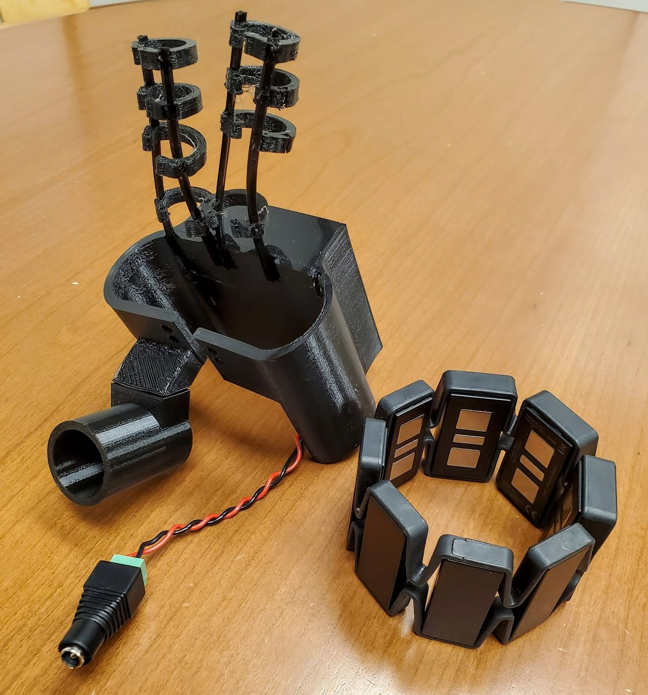

Project Sparthan is a project started by my teammates, Davide Asnaghi and Alex Wong in the Hong Kong University of Science and Technology (HKUST). The goal of the project was to find a way to build affordable and accessible biomechanical devices, such as prosthetics, orthotics, and exoskeletons. To achieve this, a customized printed circuit board was created to control five motors, with each motor representing one of the five fingers in the human hand.
A first proof of concept was built with open-sourced 3D-printed prosthetic hands. These prototypes proved to be successful, and this was when Davide approached two other team members (Haoling Li and Juan Pablo Viaux) and me to develop an exoskeleton glove for those with impaired grip strength and loss in hand functionality.

To develop the exoskeleton glove, an iterative design process was implemented by going through intensive brainstorming, initial design sketches, testing different 3D-printing materials, and going through multiple iterations before a suitable first prototype was developed.

To further develop the exoskeleton hand, and to evaluate the market potential for the Sparthan PCB as a product, we joined UC Berkeley's Global Product Development class, where we learned about product manufacturing, testing, packaging, lean methodology, business plans and strategies, and marketing. Through this experience, we were able to visit Hong Kong to explore manufacturing facilities, research universities, and gain valuable resources to help our project. Through the experiences in this class, we were able to develop a second prototype for the Sparthan Exoskeleton. We also entered the Big Ideas Contest at UC Berkeley, and won third place for the Hardware for Good category!
